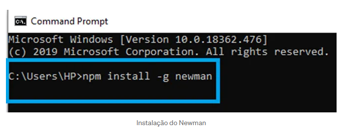
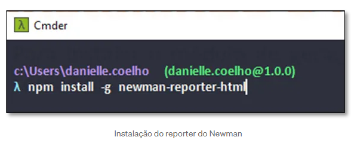

Automação de API com Postman + Newman
Pensando em compartilhar cada vez mais do meu dia a dia como QA, aqui falo como elevar o nível dos testes de API utilizando o Newman, que é uma ferramenta poderosa para reportar seus testes lá no Postman.
Antes de tudo, é preciso que se faça algumas instalações. Então vamos lá!
Instalando o Node.js
Faça o download do Node.js aqui

O sistema concluirá a instalação em poucos segundos ou minutos e mostrará a você uma mensagem de sucesso. Clique no botão Finish para fechar o instalador do Node.js.
Verificando a instalação do Node.js
Assim, o processo de instalação é concluído. Agora, você tem que verificar se o Node.js está instalado com sucesso ou não. Para verificar a instalação e confirmar se a versão correta foi instalada, abra o prompt de comando do seu PC e digite o seguinte comando: node -- version
E para verificar a versão do npm, execute o comando: npm --version

Instalando o Newman
Para instalar o Newman, abra o prompt de comando do seu PC e digite o seguinte comando: npm install –g newman
Para verificar a instalação e confirmar se a versão correta foi instalada, abra o prompt de comando do seu PC e digite o seguinte comando: newman -- version
Instalando o newman-reporter-html
Para instalar o módulo de geração de relatórios em HTML, abra o prompt de comando do seu PC e digite o seguinte comando: npm install –g newman-reporter-html
Montando a estrutura do seu teste com o Newman
Para que seu teste seja realizado de forma limpa e organizada, sugiro que crie a seguinte estrutura de pastas: TesteNewman* (Pasta onde ficarão as collections, environments e os reports) exports_reports (Pasta onde os reports serão salvos) templates (Onde ficarão os templates do newman-reporter-html. Para dicas sobre templates customizados clique aqui.
Baixando a Collection a ser testada
No Postman, execute os seguintes passos para baixar a collection:
Baixando o Environment da Collection
Caso você possua variáveis de ambiente no Postman, execute os seguintes passos para baixar o environment:
Executando collection via linha de comando
Comandos básicos do Newman:
newman run {{caminho_coleção_json}} (Executa
uma coleção em json);
newman run {{url_da_coleção}} (Executa uma
coleção via url);
newman run coleção_Postman.json –e testEnv.json
(Executa uma coleção com arquivos de variáveis);
Meu roteiro será basicamente este:
Abrir o cmd da pasta onde estão a collection e o environment:

Digitar o comando: newman run Testes.postman_collection.json -e Teste_Env.postman_environment.json — reporters cli,html — reporter-html-template templates/htmlreqres.hbs — reporter-html-export exports_reports htmlextra — reporter-htmlextra-title “Testes Postman + Newman”
Onde:
newman run — comando para executar a
collection
Testes.postman_collection.json — nome arquivo
da collection
-e Teste_Env.postman_environment.json — nome
arquivo com as variáveis de ambiente da collection
— reporters cli,html — referencia que teremos
dois tipos de reports cli (report em tela) e html (report
salvo)
— reporter-html-template templates/htmlreqres.hbs —
referencia o modelo de template do report html
— reporter-html-export exports_reports htmlextra —
informa em que pasta o report será salvo
— reporter-htmlextra-title “Testes Postman + Newman”
—
Atribui um título ao report html
Report dos testes
Após executar os testes, ele gera dois tipos de reports:
Em tela:
Report html:
Parâmetros opcionais para usar o Newman
-h: Abre o menu de ajuda;
— folder [nome_da_pasta]: Executa uma pasta
específica de uma coleção;
-e: Especifica um arquivo de variável de
ambiente JSON;
-d: Especifica um arquivo de dados (JSON ou
CSV);
-n: Informa o número de iterações;
— delay-request [número_ms]:Especifica um
delay de execução entre requisições;
— bail: Para a execução se um teste
falhar;
— verbose: Mostra detalhes da execução de
cada request.
Espero que esse guia os ajudem a rodar seus testes de API, qualquer coisa, tô nas redes ao lado…